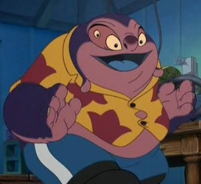
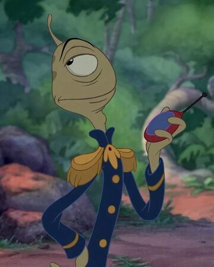
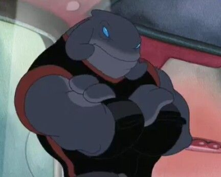

Lilo Pelekai

Lilo Pelekai es un personaje ficticio, una de los protagonistas de la película Lilo & Stitch y sus secuelas. Reside en Kokawa, Hawaii
Nani Pelekai

Nani es la hermana mayor de Lilo Pelekai y su tutora legal. Se hizo cargo de su hermana tras la muerte de sus padres. Ella ama a Lilo con devoción, pero no siempre se entienden. Trabaja en una tienda de alquiler de surf.
Jumba
Jumba Jookiba es un alienígena de la franquicia de Lilo & Stitch. Jumba particularmente sirvió como el principal antagonista en la mayoría de la película original, hasta que en el último momento se reformó, convirtiéndose en un personaje secundario importante para el resto de la franquicia.
Pleakley
Pleakley es Plorgoniano. Su verdadero nombre es "Wendy", que en su planeta significa "Valiente Guerrero"
Gantu
Gantu es el antagonista principal del mundo basado en la película Lilo & Stitch, Espacio Profundo. Es un capitán que trabaja para la Federación Galáctica, fue enviado a bordo de una nave espacial que contenía un alíen peligroso, el Experimento 626
El Dr. Hämsterviel

Es El director antagonista de la saga, Un pequeño hámster Que antiguamente Trabajo con Jumba . Es el jefe de Gantu y 625 .
Reuben (625)

es uno de los primos de Stitch , el experimento es una máquina de destruir, que tiene las mismas habilidades que Stitch, pero es muy vago, y solamente se dedica a preparar y comer los interruptores de arena.
Ángel (624)
.png)
Es Una de los primos de Stitch , el experimento Siendo 624 de Jumba . Stitch está enamorado de ella, y ella de él. Puede convertir los que son buenos en malos y los que son malos en buenos cantando. En Stitch! , Ella Es Una Famosa cantante en Todo El Mundo.